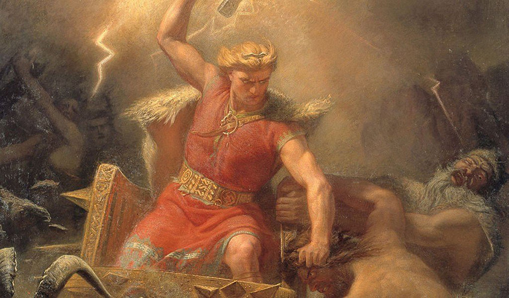

Durante muitos anos, os deuses viveram junto com os mortais até qeus dos deuses teve a idéia de construir Asgard, a sua morada celestial.
Porém, percebeu que ao construir Asgard, esqueceu de construir uma muralha para que a protegesse. Isto foi percebido também por um
cavaleiro que ao passar por perto da cidade, e identificar-se como o melhor construtor do mundo, ofereceu seus serviços para erguer
o muro. Disse que precisava de 18 meses para fazê-lo e como pagamento queria casar-se com Idun, deusa da juventude que cuidava do
pomar onde brotavam as maçãs da juventude, que faziam os deuses permanecerem sempre jovens e saudáveis.
A princípio os deuses
foram contra, mas Loki disse que se o homem construísse o muro em 6 meses o trato estava feito, todos os deuses que estavam ali
olharam-o indignados e ele disse: - Não se preocupem, em seis meses ele nao terá construído nem a metade do muro, o que o obrigará a nos entregá-lo de graça!
Apesar do pouco tempo, o construtor trabalhou arduamente com seus cavalo Svadilfari "seu cavalo escravo", e faltando 5 dias
para o término, o muro estava quase pronto.
Os deuses ficaram preocupados e mandaram Loki dar um jeito de resolver o problema.
Ele se transformou numa bela égua branca e seduziu o cavalo do construtor para fugir com ele. O construtor entao, percebendo
que não iria conseguir terminar a obra sem o cavalo, resolveu assumir sua forma natural de gigante para tentar completar
a tarefa. Odin ao ver isso chamou seu filho Thor e pediu que usasse seu martelo Miollnir para derrotar o gigante.
Thor ao encontrar o gigante atirou seu martelo esmigalhando sua cabeça logo antes dele colocar a última pedra no muro.
Loki por sua vez desapareceu por um bom tempo de Asgard, até que retornou trazendo um cavalo negro de 8 patas, que no
caso era seu filho com o cavalo do gigante.
O cavalo se chamava Sleipnir, seu nome significa suave ou aquele que plana no ar,
o mais veloz do mundo. Então deu de presente o cavalo Sleipnir para Odin no intuito de que ele esquecesse do incidente.
Na mitologia Nórdica Loki, é o deus da mentira...

Para quem acha que o cross-dressing é um fenômeno novo, pense novamente. Uma vez aconteceu que um gigante chamado Thrym roubou o martelo de Thor e se recusou a devolvê-lo. Ele só retornaria o martelo sob uma condição: que ele pudesse se casar com Freyja. Claro, ninguém iria deixar isso acontecer, especialmente Thor, então ele decidiu se passar por Freyja e se casar com o gigante em seu lugar. Loki adorou essa ideia e se transformou em uma serva para assistir a tudo isso acontecendo. De alguma forma, os gigantes acreditaram no disfarce, e os dois conseguiram levar Thor para a festa de casamento. Durante todo o banquete, Thor era obviamente obviamente viril, especialmente no apetite, e os gigantes pareciam suspeitar de algo. Loki continuamente inventou desculpas, todas com piadas subjacentes sobre o sexo real de Thor. No momento em que Thor conseguiu colocar as mãos em seu martelo, ele não só deixou o gigante no altar, como também matou seu pretenso marido e todos os convidados presentes. Provavelmente para a grande diversão de Loki. O tom bom-humorado desse conto com certeza o coloca entre as melhores histórias da mitologia nórdica.
